Chapter 11 Author: Anastasia Kousa
# check enviroment status
#renv::status()
#renv::snapshot()
#renv::restore()#install required packages
# if (!requireNamespace("BiocManager", quietly = TRUE))
# install.packages("BiocManager")
# renv::install("bioc::BiocManager", force=T)
# if (!require("BiocManager", quietly = TRUE))
# install.packages("BiocManager")
#BiocManager::install("biomaRt", force=T)
# renv::install("bioc::edgeR", force=T)
#renv::install("bioc::png", force=T)
#renv::install("tibble@3.1.8", force=T)
# renv::install("ggpubr", force=T)
# renv::install("pheatmap", force=T)
# renv::install("dichromat", force=T)
# renv::install("grid", force=T)
# renv::install("patchwork", force=T)# load required packages
library(biomaRt)
library(edgeR)## Loading required package: limmalibrary(tibble)
library(ggpubr)
library(pheatmap)
library(dichromat)
library(grid)
library(patchwork)##
## Attaching package: 'patchwork'## The following object is masked from 'package:cowplot':
##
## align_plotslibrary(BiocManager)
library(stats)
library(readxl)
library(dplyr)11.1 GSEA RESULTS
setwd("/Volumes/Macintosh HD/Users/miltiado/Documents/BA/Anastasia/gsea/")
# store gsea file paths
gsea_result_files <- list.files(recursive = TRUE, pattern = "^gsea_report(.*)tsv$")
# create annotation fields
celltype_annotation = rep(c("CD4", "CD4", "CD8", "CD8","Treg", "Treg"),4)
treatment_annotation= c(rep("CDCA",6), rep("UDCA",6), rep("GW4064",6), rep("DY268",6))
# initiate counter
i=1
# create empty tibble to store the GSEA data
all_gsea_results = tibble("GS PATHWAY"=factor(), "GS DETAILS"=integer(), "SIZE"=double(), "ES"=double(), "NES"=double(), "NOM p-val"=double(), "FDR q-val"=double(), "FWER p-val"=double(), "RANK"=integer(), "LEADING EDGE"=factor(), "CELLTYPE" = factor(), "TREATMENT" = factor())
# fill in tibble with all GSEA results
for (path in gsea_result_files){
gsea_results = tibble(read.table(path, sep="\t", row.names = 1, skip = 1))
colnames(gsea_results) = c("GS PATHWAY", "GS DETAILS", "SIZE", "ES", "NES", "NOM p-val", "FDR q-val", "FWER p-val", "RANK", "LEADING EDGE", "CELLTYPE", "TREATMENT")
gsea_results$CELLTYPE = rep(as.factor(celltype_annotation[i]), nrow(gsea_results))
gsea_results$TREATMENT = rep(as.factor(treatment_annotation[i]), nrow(gsea_results))
all_gsea_results = rbind(all_gsea_results, gsea_results)
i=i+1
}
# remove "---" rows
all_gsea_results = all_gsea_results[all_gsea_results$NES!="---",]
# convert NES to double
all_gsea_results$NES = as.double(all_gsea_results$NES)
# convert FDR to -log10
all_gsea_results$`-10log(FDR q-val)` = -log(as.double(all_gsea_results$`FDR q-val`)+0.00001,10)
all_gsea_results$trFDR = all_gsea_results$`-10log(FDR q-val)`
# plot GSEA results in a dotplot facet by cell type and treatment
ggdotchart(all_gsea_results[(all_gsea_results$`FDR q-val`<=0.05) ,], 'GS PATHWAY', 'NES', shape=19, sorting = "ascending",
add = "segments", color= 'NES', rotate=TRUE, dot.size='trFDR',
ggtheme = theme_pubr()) + facet_grid(CELLTYPE~TREATMENT) +
scale_colour_gradientn(colours = dichromat::colorschemes$DarkRedtoBlue.12) +
geom_hline(yintercept = 0, linetype = 2, color = "lightgray") + ylim(-3,3) + font("xy.text", size=11)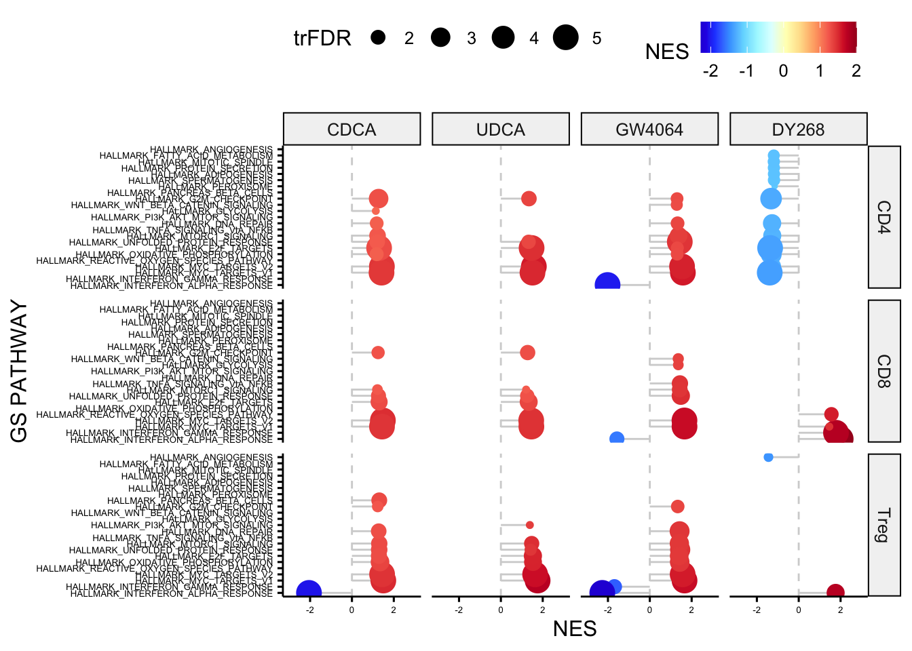
11.2 FOLD CHANGE vs FOLD CHANGE
# set path to DEG results (treatment vs vehicle)
# setwd("~/Desktop/PROJECTS/[AK030] In vitro human cell line T-cells/GitHub-repo/output/")
# # read in all available excel sheet names
# wilcox_results = excel_sheets('in-vitro_human_cell_lines_CD4_wilcox.xlsx')
wilcox_results = read_xlsx("/Volumes/Macintosh HD/Users/miltiado/Documents/BA/Anastasia/results/in-vitro_human_cell_lines_CD4_wilcox.xlsx")## New names:
## • `` -> `...1`# create annotation fields
celltype_annotation = rep(c("CD4", "CD4", "CD8", "CD8","Treg", "Treg"),4)
treatment_annotation= c(rep("CDCA",6), rep("UDCA",6), rep("GW4064",6), rep("DY268",6))
setwd("/Volumes/Macintosh HD/Users/miltiado/Documents/BA/Anastasia/results/")
# initiate counter
i=1
# create empty tibble to store the GSEA data
all_gsea_results = tibble("GS PATHWAY"=factor(), "GS DETAILS"=integer(), "SIZE"=double(), "ES"=double(), "NES"=double(), "NOM p-val"=double(), "FDR q-val"=double(), "FWER p-val"=double(), "RANK"=integer(), "LEADING EDGE"=factor(), "CELLTYPE" = factor(), "TREATMENT" = factor())
# fill in tibble with all GSEA results
# for (path in gsea_result_files){
# gsea_results = tibble(read.table(path, sep="\t", row.names = 1, skip = 1))
# colnames(gsea_results) = c("GS PATHWAY", "GS DETAILS", "SIZE", "ES", "NES", "NOM p-val", "FDR q-val", "FWER p-val", "RANK", "LEADING EDGE", "CELLTYPE", "TREATMENT")
# gsea_results$CELLTYPE = rep(as.factor(celltype_annotation[i]), nrow(gsea_results))
# gsea_results$TREATMENT = rep(as.factor(treatment_annotation[i]), nrow(gsea_results))
# all_gsea_results = rbind(all_gsea_results, gsea_results)
# i=i+1
# }
# remove "---" rows
all_gsea_results = all_gsea_results[all_gsea_results$NES!="---",]
# convert NES to double
all_gsea_results$NES = as.double(all_gsea_results$NES)
# convert FDR to -log10
all_gsea_results$`-10log(FDR q-val)` = -log(as.double(all_gsea_results$`FDR q-val`)+0.00001,10)
# plot GSEA results in a dotplot facet by cell type and treatment
# ggdotchart(all_gsea_results[(all_gsea_results$`FDR q-val`<=0.05) ,], 'GS PATHWAY', 'NES', shape=19, sorting = "ascending",
# add = "segments", color= 'NES', rotate=TRUE, dot.size='-10log(FDR q-val)', ggtheme = theme_pubr()) + facet_grid(CELLTYPE~TREATMENT) +
# scale_colour_gradientn(colours = dichromat::colorschemes$DarkRedtoBlue.12) +
# geom_hline(yintercept = 0, linetype = 2, color = "lightgray") + ylim(-3,3) + font("xy.text", size=11)# FOLD CHANGE vs FOLD CHANGE
# set path to DEG results (treatment vs vehicle)
setwd("/Users/miltiado/Documents/BA/Anastasia/results/")
# read in all available excel sheet names
wilcox_results = excel_sheets('in-vitro_human_cell_lines_CD4_wilcox.xlsx')
# in the remaining code sections we read in combinations of DEG results, combine them in a joined tibble, annotate significant genes in either comparison or in both and create an assorted scatterplot with the pearson correlation coefficient and statistic
# CDCA vs GW4064
# CD4
for (item in '2.CDCA(100nM) CD4') {
CDCA <- read_excel('/Volumes/Macintosh HD/Users/miltiado/Documents/BA/Anastasia/results/in-vitro_human_cell_lines_CD4_wilcox.xlsx', sheet = item)
}## New names:
## • `` -> `...1`for (item in '3.GW4064(1uM) CD4') {
GW4064 <- read_excel('/Volumes/Macintosh HD/Users/miltiado/Documents/BA/Anastasia/results/in-vitro_human_cell_lines_CD4_wilcox.xlsx', sheet = item)
}## New names:
## • `` -> `...1`CDCA_GW4064 = full_join( CDCA, GW4064, by=c('2.CDCA(100nM) CD4_n'='3.GW4064(1uM) CD4_n'))
CDCA_GW4064 <- CDCA_GW4064 %>% mutate(annotation = case_when(CDCA_GW4064$`2.CDCA(100nM) CD4_p`<=0.05 & CDCA_GW4064$`3.GW4064(1uM) CD4_p`<=0.05 ~ 'red',
CDCA_GW4064$`2.CDCA(100nM) CD4_p`<=0.05 & CDCA_GW4064$`3.GW4064(1uM) CD4_p`>0.05 ~ 'green3',
CDCA_GW4064$`2.CDCA(100nM) CD4_p`>0.05 & CDCA_GW4064$`3.GW4064(1uM) CD4_p`<=0.05 ~ 'blue',
CDCA_GW4064$`2.CDCA(100nM) CD4_p`>0.05 & CDCA_GW4064$`3.GW4064(1uM) CD4_p`>=0.05 ~ 'grey80'))
ggplot(CDCA_GW4064[CDCA_GW4064$annotation!='grey80',], aes(x = `2.CDCA(100nM) CD4_s`, y = `3.GW4064(1uM) CD4_s`)) +
geom_point(size = 5, color = CDCA_GW4064[CDCA_GW4064$annotation!='grey80',]$annotation, alpha=0.7) + geom_rug() + theme_pubr() +
stat_smooth(method = "lm", formula = y ~ x, col='black', geom = "smooth") + stat_cor(method="pearson") 
# CD8
for (item in '3.GW4064(1uM) CD8') {
GW4064 <- read_excel('/Volumes/Macintosh HD/Users/miltiado/Documents/BA/Anastasia/results/in-vitro_human_cell_lines_CD8_wilcox.xlsx', sheet = item)
}## New names:
## • `` -> `...1`for (item in '2.CDCA(100nM) CD8') {
CDCA <- read_excel('/Volumes/Macintosh HD/Users/miltiado/Documents/BA/Anastasia/results/in-vitro_human_cell_lines_CD8_wilcox.xlsx', sheet = item)
}## New names:
## • `` -> `...1`CDCA_GW4064 = full_join(CDCA, GW4064, by=c('2.CDCA(100nM) CD8_n'='3.GW4064(1uM) CD8_n'))
CDCA_GW4064 <- CDCA_GW4064 %>% mutate(annotation = case_when(CDCA_GW4064$`2.CDCA(100nM) CD8_p`<=0.05 & CDCA_GW4064$`3.GW4064(1uM) CD8_p`<=0.05 ~ 'red',
CDCA_GW4064$`2.CDCA(100nM) CD8_p`<=0.05 & CDCA_GW4064$`3.GW4064(1uM) CD8_p`>0.05 ~ 'green3',
CDCA_GW4064$`2.CDCA(100nM) CD8_p`>0.05 & CDCA_GW4064$`3.GW4064(1uM) CD8_p`<=0.05 ~ 'blue',
CDCA_GW4064$`2.CDCA(100nM) CD8_p`>0.05 & CDCA_GW4064$`3.GW4064(1uM) CD8_p`>=0.05 ~ 'grey80'))
ggplot(CDCA_GW4064[CDCA_GW4064$annotation!='grey80',], aes(x = `2.CDCA(100nM) CD8_s`, y = `3.GW4064(1uM) CD8_s`)) +
geom_point(size = 5, color = CDCA_GW4064[CDCA_GW4064$annotation!='grey80',]$annotation, alpha=0.7) + geom_rug() + theme_pubr() +
stat_smooth(method = "lm", formula = y ~ x, col='black', geom = "smooth") + stat_cor(method="pearson")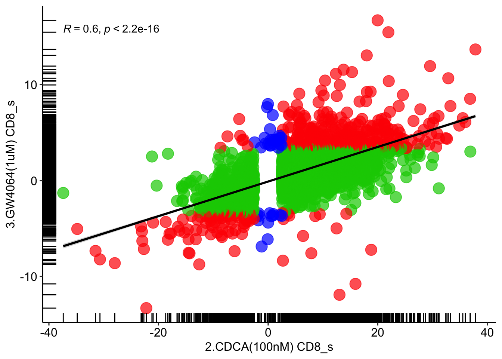
# Treg
for (item in '3.GW4064(1uM) Treg') {
GW4064 <- read_excel('in-vitro_human_cell_lines_Treg_wilcox.xlsx', sheet = item)
}## New names:
## • `` -> `...1`for (item in '2.CDCA(100nM) Treg') {
CDCA <- read_excel('in-vitro_human_cell_lines_Treg_wilcox.xlsx', sheet = item)
}## New names:
## • `` -> `...1`CDCA_GW4064 = full_join(CDCA, GW4064, by=c('2.CDCA(100nM) Treg_n'='3.GW4064(1uM) Treg_n'))
CDCA_GW4064 <- CDCA_GW4064 %>% mutate(annotation = case_when(CDCA_GW4064$`2.CDCA(100nM) Treg_p`<=0.05 & CDCA_GW4064$`3.GW4064(1uM) Treg_p`<=0.05 ~ 'red',
CDCA_GW4064$`2.CDCA(100nM) Treg_p`<=0.05 & CDCA_GW4064$`3.GW4064(1uM) Treg_p`>0.05 ~ 'green3',
CDCA_GW4064$`2.CDCA(100nM) Treg_p`>0.05 & CDCA_GW4064$`3.GW4064(1uM) Treg_p`<=0.05 ~ 'blue',
CDCA_GW4064$`2.CDCA(100nM) Treg_p`>0.05 & CDCA_GW4064$`3.GW4064(1uM) Treg_p`>=0.05 ~ 'grey80'))
ggplot(CDCA_GW4064[CDCA_GW4064$annotation!='grey80',], aes(x = `2.CDCA(100nM) Treg_s`, y = `3.GW4064(1uM) Treg_s`)) +
geom_point(size = 5, color = CDCA_GW4064[CDCA_GW4064$annotation!='grey80',]$annotation, alpha=0.7) + geom_rug() + theme_pubr() +
stat_smooth(method = "lm", formula = y ~ x, col='black', geom = "smooth") + stat_cor(method="pearson")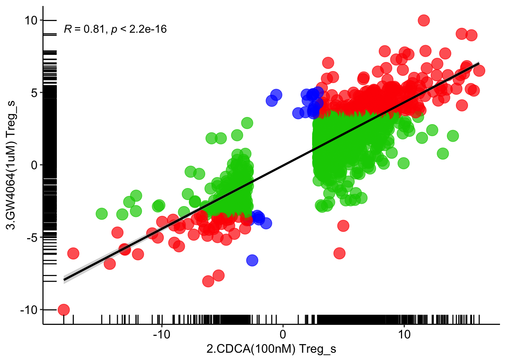
# UDCA vs GW4064
# CD4
for (item in '4.UDCA(100nM) CD4') {
UDCA <- read_excel('in-vitro_human_cell_lines_CD4_wilcox.xlsx', sheet = item)
}## New names:
## • `` -> `...1`for (item in '3.GW4064(1uM) CD4') {
GW4064 <- read_excel('in-vitro_human_cell_lines_CD4_wilcox.xlsx', sheet = item)
}## New names:
## • `` -> `...1`UDCA_GW4064 = full_join( UDCA, GW4064, by=c('4.UDCA(100nM) CD4_n'='3.GW4064(1uM) CD4_n'))
UDCA_GW4064 <- UDCA_GW4064 %>% mutate(annotation = case_when(UDCA_GW4064$`4.UDCA(100nM) CD4_p`<=0.05 & UDCA_GW4064$`3.GW4064(1uM) CD4_p`<=0.05 ~ 'red',
UDCA_GW4064$`4.UDCA(100nM) CD4_p`<=0.05 & UDCA_GW4064$`3.GW4064(1uM) CD4_p`>0.05 ~ 'green3',
UDCA_GW4064$`4.UDCA(100nM) CD4_p`>0.05 & UDCA_GW4064$`3.GW4064(1uM) CD4_p`<=0.05 ~ 'blue',
UDCA_GW4064$`4.UDCA(100nM) CD4_p`>0.05 & UDCA_GW4064$`3.GW4064(1uM) CD4_p`>=0.05 ~ 'grey80'))
ggplot(UDCA_GW4064[UDCA_GW4064$annotation!='grey80',], aes(x = `4.UDCA(100nM) CD4_s`, y = `3.GW4064(1uM) CD4_s`)) +
geom_point(size = 5, color = UDCA_GW4064[UDCA_GW4064$annotation!='grey80',]$annotation, alpha=0.7) + geom_rug() + theme_pubr() +
stat_smooth(method = "lm", formula = y ~ x, col='black', geom = "smooth") + stat_cor(method="pearson")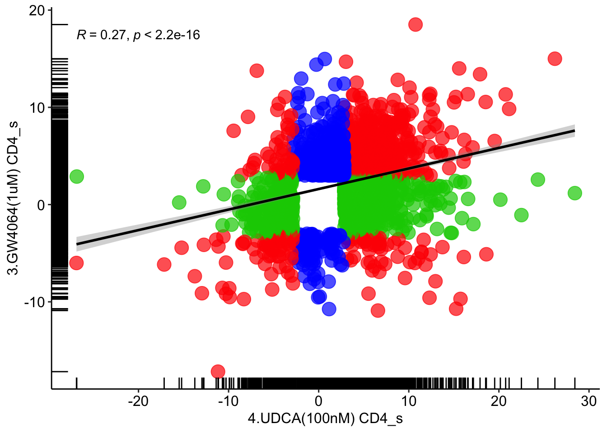
# CD8
for (item in '4.UDCA(100nM) CD8') {
UDCA <- read_excel('in-vitro_human_cell_lines_CD8_wilcox.xlsx', sheet = item)
}## New names:
## • `` -> `...1`for (item in '3.GW4064(1uM) CD8') {
GW4064 <- read_excel('in-vitro_human_cell_lines_CD8_wilcox.xlsx', sheet = item)
}## New names:
## • `` -> `...1`UDCA_GW4064 = full_join( UDCA, GW4064, by=c('4.UDCA(100nM) CD8_n'='3.GW4064(1uM) CD8_n'))
UDCA_GW4064 <- UDCA_GW4064 %>% mutate(annotation = case_when(UDCA_GW4064$`4.UDCA(100nM) CD8_p`<=0.05 & UDCA_GW4064$`3.GW4064(1uM) CD8_p`<=0.05 ~ 'red',
UDCA_GW4064$`4.UDCA(100nM) CD8_p`<=0.05 & UDCA_GW4064$`3.GW4064(1uM) CD8_p`>0.05 ~ 'green3',
UDCA_GW4064$`4.UDCA(100nM) CD8_p`>0.05 & UDCA_GW4064$`3.GW4064(1uM) CD8_p`<=0.05 ~ 'blue',
UDCA_GW4064$`4.UDCA(100nM) CD8_p`>0.05 & UDCA_GW4064$`3.GW4064(1uM) CD8_p`>=0.05 ~ 'grey80'))
ggplot(UDCA_GW4064[UDCA_GW4064$annotation!='grey80',], aes(x = `4.UDCA(100nM) CD8_s`, y = `3.GW4064(1uM) CD8_s`)) +
geom_point(size = 5, color = UDCA_GW4064[UDCA_GW4064$annotation!='grey80',]$annotation, alpha=0.7) + geom_rug() + theme_pubr() +
stat_smooth(method = "lm", formula = y ~ x, col='black', geom = "smooth") + stat_cor(method="pearson")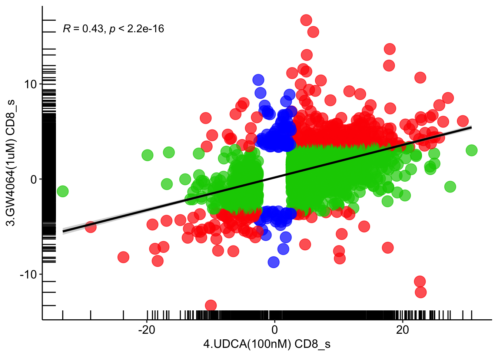
# Treg
for (item in '4.UDCA(100nM) Treg') {
UDCA <- read_excel('in-vitro_human_cell_lines_Treg_wilcox.xlsx', sheet = item)
}## New names:
## • `` -> `...1`for (item in '3.GW4064(1uM) Treg') {
GW4064 <- read_excel('in-vitro_human_cell_lines_Treg_wilcox.xlsx', sheet = item)
}## New names:
## • `` -> `...1`UDCA_GW4064 = full_join( UDCA, GW4064, by=c('4.UDCA(100nM) Treg_n'='3.GW4064(1uM) Treg_n'))
UDCA_GW4064 <- UDCA_GW4064 %>% mutate(annotation = case_when(UDCA_GW4064$`4.UDCA(100nM) Treg_p`<=0.05 & UDCA_GW4064$`3.GW4064(1uM) Treg_p`<=0.05 ~ 'red',
UDCA_GW4064$`4.UDCA(100nM) Treg_p`<=0.05 & UDCA_GW4064$`3.GW4064(1uM) Treg_p`>0.05 ~ 'green3',
UDCA_GW4064$`4.UDCA(100nM) Treg_p`>0.05 & UDCA_GW4064$`3.GW4064(1uM) Treg_p`<=0.05 ~ 'blue',
UDCA_GW4064$`4.UDCA(100nM) Treg_p`>0.05 & UDCA_GW4064$`3.GW4064(1uM) Treg_p`>=0.05 ~ 'grey80'))
ggplot(UDCA_GW4064[UDCA_GW4064$annotation!='grey80',], aes(x = `4.UDCA(100nM) Treg_s`, y = `3.GW4064(1uM) Treg_s`)) +
geom_point(size = 5, color = UDCA_GW4064[UDCA_GW4064$annotation!='grey80',]$annotation, alpha=0.7) + geom_rug() + theme_pubr() +
stat_smooth(method = "lm", formula = y ~ x, col='black', geom = "smooth") + stat_cor(method="pearson")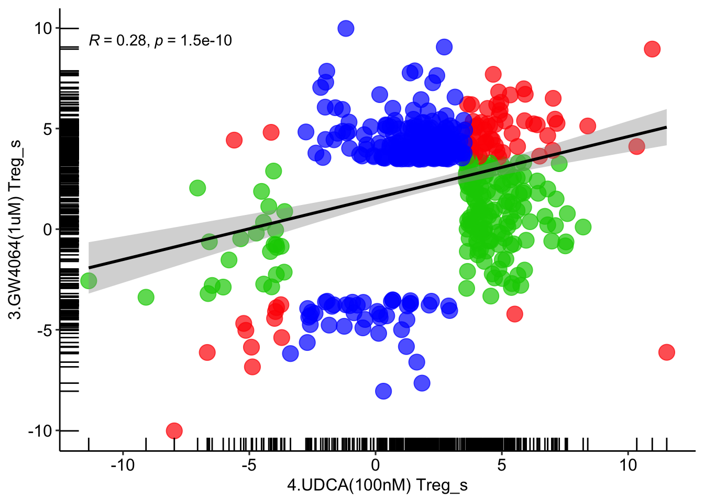
# DY268 vs GW4064
# CD4
for (item in '5.DY268(1uM) CD4') {
DY268 <- read_excel('in-vitro_human_cell_lines_CD4_wilcox.xlsx', sheet = item)
}## New names:
## • `` -> `...1`for (item in '3.GW4064(1uM) CD4') {
GW4064 <- read_excel('in-vitro_human_cell_lines_CD4_wilcox.xlsx', sheet = item)
}## New names:
## • `` -> `...1`DY268_GW4064 = full_join(DY268, GW4064, by=c('5.DY268(1uM) CD4_n'='3.GW4064(1uM) CD4_n'))
DY268_GW4064 <- DY268_GW4064 %>% mutate(annotation = case_when(DY268_GW4064$`5.DY268(1uM) CD4_p`<=0.05 & DY268_GW4064$`3.GW4064(1uM) CD4_p`<=0.05 ~ 'red',
DY268_GW4064$`5.DY268(1uM) CD4_p`<=0.05 & DY268_GW4064$`3.GW4064(1uM) CD4_p`>0.05 ~ 'green3',
DY268_GW4064$`5.DY268(1uM) CD4_p`>0.05 & DY268_GW4064$`3.GW4064(1uM) CD4_p`<=0.05 ~ 'blue',
DY268_GW4064$`5.DY268(1uM) CD4_p`>0.05 & DY268_GW4064$`3.GW4064(1uM) CD4_p`>=0.05 ~ 'grey80'))
ggplot(DY268_GW4064[DY268_GW4064$annotation!='grey80',], aes(x = `5.DY268(1uM) CD4_s`, y = `3.GW4064(1uM) CD4_s`)) +
geom_point(size = 5, color = DY268_GW4064[DY268_GW4064$annotation!='grey80',]$annotation, alpha=0.7) + geom_rug() + theme_pubr() +
stat_smooth(method = "lm", formula = y ~ x, col='black', geom = "smooth") + stat_cor(method="pearson")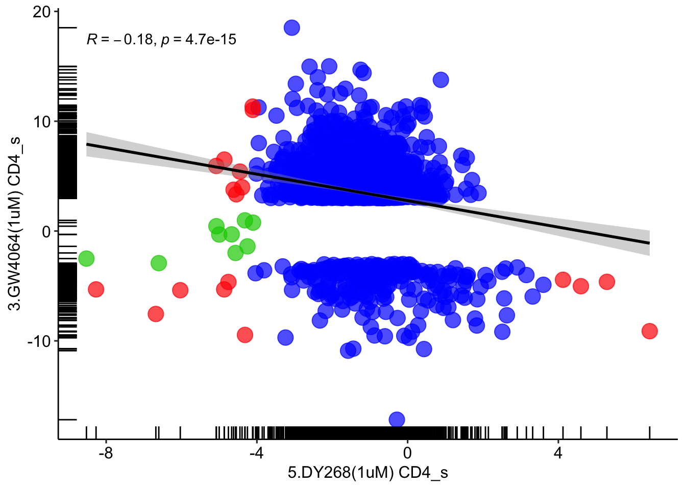
#CD8
for (item in '5.DY268(1uM) CD8') {
DY268 <- read_excel('in-vitro_human_cell_lines_CD8_wilcox.xlsx', sheet = item)
}## New names:
## • `` -> `...1`for (item in '3.GW4064(1uM) CD8') {
GW4064 <- read_excel('in-vitro_human_cell_lines_CD8_wilcox.xlsx', sheet = item)
}## New names:
## • `` -> `...1`DY268_GW4064 = full_join( DY268, GW4064, by=c('5.DY268(1uM) CD8_n'='3.GW4064(1uM) CD8_n'))
DY268_GW4064 <- DY268_GW4064 %>% mutate(annotation = case_when(DY268_GW4064$`5.DY268(1uM) CD8_p`<=0.05 & DY268_GW4064$`3.GW4064(1uM) CD8_p`<=0.05 ~ 'red',
DY268_GW4064$`5.DY268(1uM) CD8_p`<=0.05 & DY268_GW4064$`3.GW4064(1uM) CD8_p`>0.05 ~ 'green3',
DY268_GW4064$`5.DY268(1uM) CD8_p`>0.05 & DY268_GW4064$`3.GW4064(1uM) CD8_p`<=0.05 ~ 'blue',
DY268_GW4064$`5.DY268(1uM) CD8_p`>0.05 & DY268_GW4064$`3.GW4064(1uM) CD8_p`>=0.05 ~ 'grey80'))
ggplot(DY268_GW4064[DY268_GW4064$annotation!='grey80',], aes(x = `5.DY268(1uM) CD8_s`, y = `3.GW4064(1uM) CD8_s`)) +
geom_point(size = 5, color = DY268_GW4064[DY268_GW4064$annotation!='grey80',]$annotation, alpha=0.7) + geom_rug() + theme_pubr() +
stat_smooth(method = "lm", formula = y ~ x, col='black', geom = "smooth") + stat_cor(method="pearson")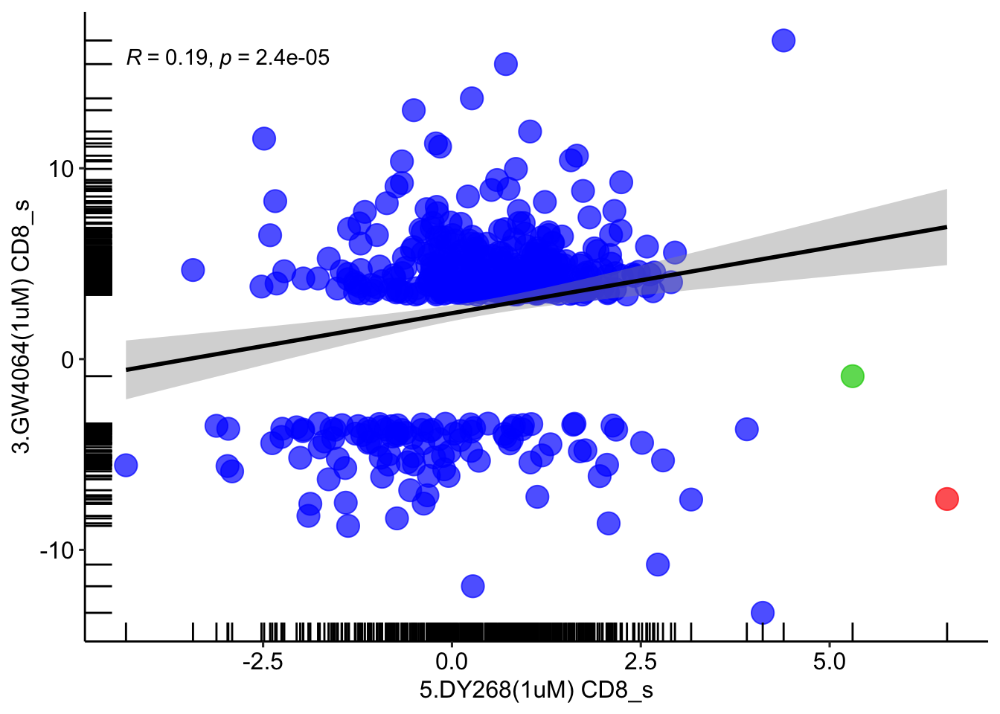
# Treg
for (item in '5.DY268(1uM) Treg') {
DY268 <- read_excel('in-vitro_human_cell_lines_Treg_wilcox.xlsx', sheet = item)
}## New names:
## • `` -> `...1`for (item in '3.GW4064(1uM) Treg') {
GW4064 <- read_excel('in-vitro_human_cell_lines_Treg_wilcox.xlsx', sheet = item)
}## New names:
## • `` -> `...1`DY268_GW4064 = full_join( DY268, GW4064, by=c('5.DY268(1uM) Treg_n'='3.GW4064(1uM) Treg_n'))
DY268_GW4064 <- DY268_GW4064 %>% mutate(annotation = case_when(DY268_GW4064$`5.DY268(1uM) Treg_p`<=0.05 & DY268_GW4064$`3.GW4064(1uM) Treg_p`<=0.05 ~ 'red',
DY268_GW4064$`5.DY268(1uM) Treg_p`<=0.05 & DY268_GW4064$`3.GW4064(1uM) Treg_p`>0.05 ~ 'green3',
DY268_GW4064$`5.DY268(1uM) Treg_p`>0.05 & DY268_GW4064$`3.GW4064(1uM) Treg_p`<=0.05 ~ 'blue',
DY268_GW4064$`5.DY268(1uM) Treg_p`>0.05 & DY268_GW4064$`3.GW4064(1uM) Treg_p`>=0.05 ~ 'grey80'))
ggplot(DY268_GW4064[DY268_GW4064$annotation!='grey80',], aes(x = `5.DY268(1uM) Treg_s`, y = `3.GW4064(1uM) Treg_s`)) +
geom_point(size = 5, color = DY268_GW4064[DY268_GW4064$annotation!='grey80',]$annotation, alpha=0.7) + geom_rug() + theme_pubr() +
stat_smooth(method = "lm", formula = y ~ x, col='black', geom = "smooth") + stat_cor(method="pearson")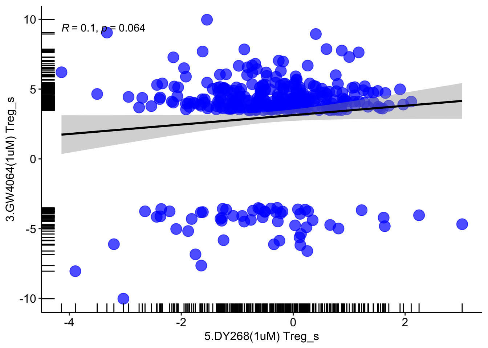
# UDCA vs DY268
# CD4
for (item in '4.UDCA(100nM) CD4') {
UDCA <- read_excel('in-vitro_human_cell_lines_CD4_wilcox.xlsx', sheet = item)
}## New names:
## • `` -> `...1`for (item in '5.DY268(1uM) CD4') {
DY268 <- read_excel('in-vitro_human_cell_lines_CD4_wilcox.xlsx', sheet = item)
}## New names:
## • `` -> `...1`DY268_UDCA = full_join(DY268, UDCA, by=c('5.DY268(1uM) CD4_n'='4.UDCA(100nM) CD4_n'))
DY268_UDCA <- DY268_UDCA %>% mutate(annotation = case_when(DY268_UDCA$`5.DY268(1uM) CD4_p`<=0.05 & DY268_UDCA$`4.UDCA(100nM) CD4_p`<=0.05 ~ 'red',
DY268_UDCA$`5.DY268(1uM) CD4_p`<=0.05 & DY268_UDCA$`4.UDCA(100nM) CD4_p`>0.05 ~ 'green3',
DY268_UDCA$`5.DY268(1uM) CD4_p`>0.05 & DY268_UDCA$`4.UDCA(100nM) CD4_p`<=0.05 ~ 'blue',
DY268_UDCA$`5.DY268(1uM) CD4_p`>0.05 & DY268_UDCA$`4.UDCA(100nM) CD4_p`>=0.05 ~ 'grey80'))
ggplot(DY268_UDCA[DY268_UDCA$annotation!='grey80',], aes(x = `5.DY268(1uM) CD4_s`, y = `4.UDCA(100nM) CD4_s`)) +
geom_point(size = 5, color = DY268_UDCA[DY268_UDCA$annotation!='grey80',]$annotation, alpha=0.7) + geom_rug() + theme_pubr() +
stat_smooth(method = "lm", formula = y ~ x, col='black', geom = "smooth") + stat_cor(method="pearson")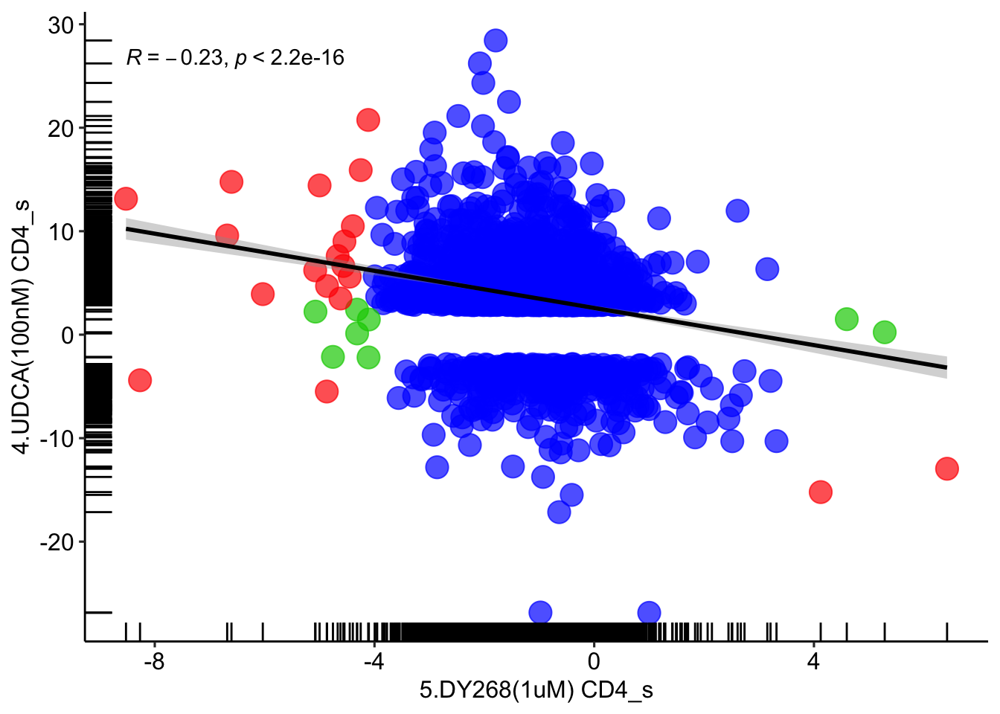
# CD8
for (item in '5.DY268(1uM) CD8') {
DY268 <- read_excel('in-vitro_human_cell_lines_CD8_wilcox.xlsx', sheet = item)
}## New names:
## • `` -> `...1`for (item in '4.UDCA(100nM) CD8') {
UDCA <- read_excel('in-vitro_human_cell_lines_CD8_wilcox.xlsx', sheet = item)
}## New names:
## • `` -> `...1`DY268_UDCA = full_join( DY268, UDCA, by=c('5.DY268(1uM) CD8_n'='4.UDCA(100nM) CD8_n'))
DY268_UDCA <- DY268_UDCA %>% mutate(annotation = case_when(DY268_UDCA$`5.DY268(1uM) CD8_p`<=0.05 & DY268_UDCA$`4.UDCA(100nM) CD8_p`<=0.05 ~ 'red',
DY268_UDCA$`5.DY268(1uM) CD8_p`<=0.05 & DY268_UDCA$`4.UDCA(100nM) CD8_p`>0.05 ~ 'green3',
DY268_UDCA$`5.DY268(1uM) CD8_p`>0.05 & DY268_UDCA$`4.UDCA(100nM) CD8_p`<=0.05 ~ 'blue',
DY268_UDCA$`5.DY268(1uM) CD8_p`>0.05 & DY268_UDCA$`4.UDCA(100nM) CD8_p`>=0.05 ~ 'grey80'))
ggplot(DY268_UDCA[DY268_UDCA$annotation!='grey80',], aes(x = `5.DY268(1uM) CD8_s`, y = `4.UDCA(100nM) CD8_s`)) +
geom_point(size = 5, color = DY268_UDCA[DY268_UDCA$annotation!='grey80',]$annotation, alpha=0.7) + geom_rug() + theme_pubr() +
stat_smooth(method = "lm", formula = y ~ x, col='black', geom = "smooth") + stat_cor(method="pearson")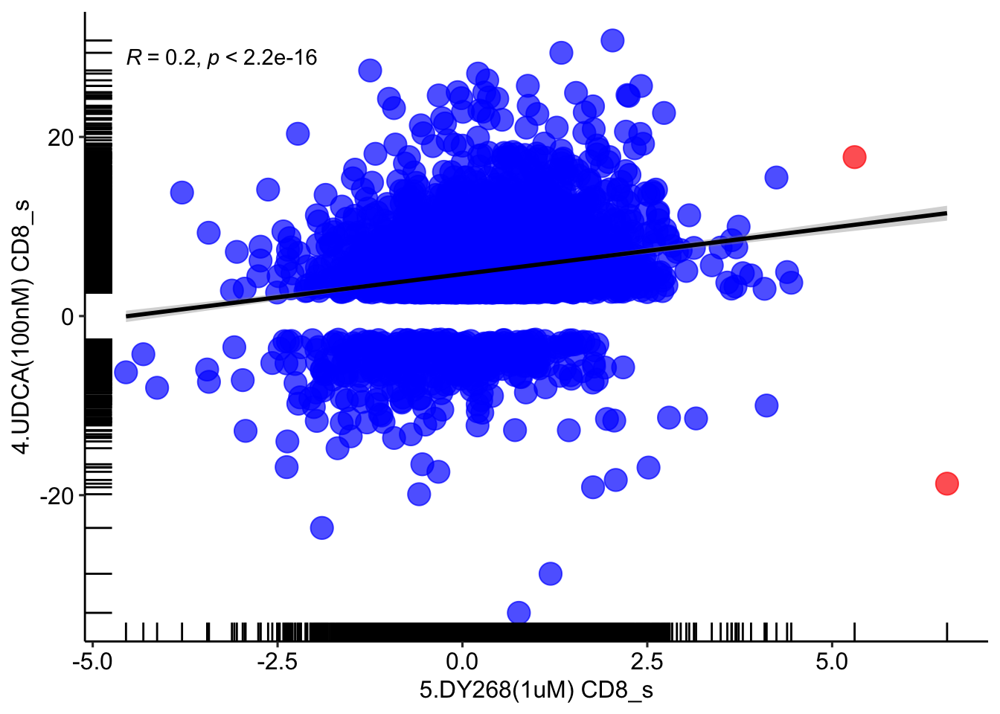
# Treg
for (item in '5.DY268(1uM) Treg') {
DY268 <- read_excel('in-vitro_human_cell_lines_Treg_wilcox.xlsx', sheet = item)
}## New names:
## • `` -> `...1`for (item in '4.UDCA(100nM) Treg') {
UDCA <- read_excel('in-vitro_human_cell_lines_Treg_wilcox.xlsx', sheet = item)
}## New names:
## • `` -> `...1`DY268_UDCA = full_join( DY268, UDCA, by=c('5.DY268(1uM) Treg_n'='4.UDCA(100nM) Treg_n'))
DY268_UDCA <- DY268_UDCA %>% mutate(annotation = case_when(DY268_UDCA$`5.DY268(1uM) Treg_p`<=0.05 & DY268_UDCA$`4.UDCA(100nM) Treg_p`<=0.05 ~ 'red',
DY268_UDCA$`5.DY268(1uM) Treg_p`<=0.05 & DY268_UDCA$`4.UDCA(100nM) Treg_p`>0.05 ~ 'green3',
DY268_UDCA$`5.DY268(1uM) Treg_p`>0.05 & DY268_UDCA$`4.UDCA(100nM) Treg_p`<=0.05 ~ 'blue',
DY268_UDCA$`5.DY268(1uM) Treg_p`>0.05 & DY268_UDCA$`4.UDCA(100nM) Treg_p`>=0.05 ~ 'grey80'))
ggplot(DY268_UDCA[DY268_UDCA$annotation!='grey80',], aes(x = `5.DY268(1uM) Treg_s`, y = `4.UDCA(100nM) Treg_s`)) +
geom_point(size = 5, color = DY268_UDCA[DY268_UDCA$annotation!='grey80',]$annotation, alpha=0.7) + geom_rug() + theme_pubr() +
stat_smooth(method = "lm", formula = y ~ x, col='black', geom = "smooth") + stat_cor(method="pearson")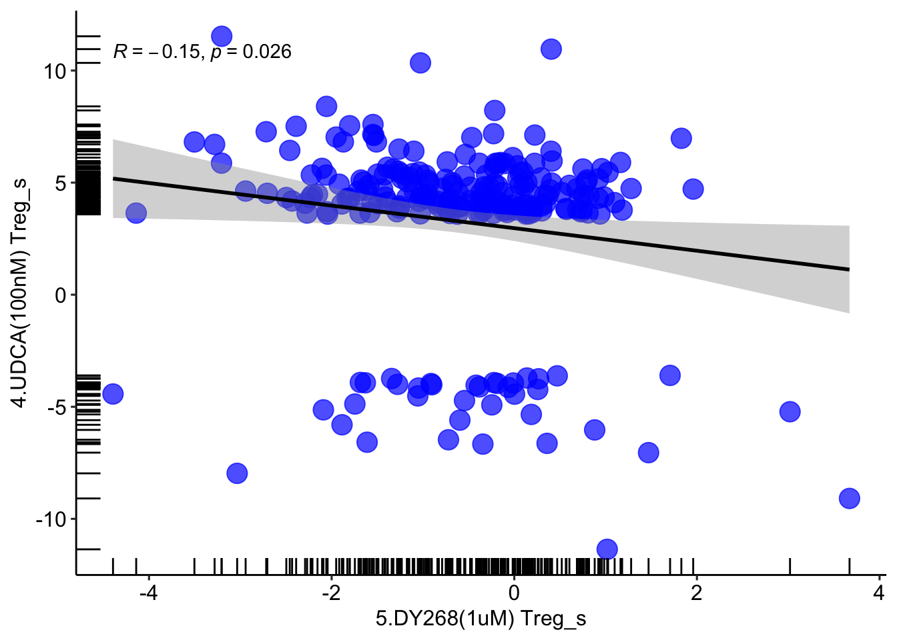